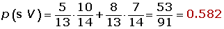
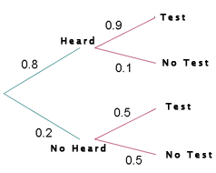
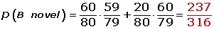

Probability Word Problems
1A box contains 5 red balls and 8 violet. A ball is removed and replaced by two of the other color and then a second ball is drawn. Calculate:
1 The probability that the second ball is violet.
2The probability that both balls drawn from the box are the same color.
2In a class in which all students practice at least one sport, 60% of students play soccer or basketball and 10% practice both sports. If there is also 60% that do not play soccer, calculate the probability that a student chosen at random from the class:
1 Plays soccer only.
2Plays basketball only.
3Plays only one of the sports.
4Plays neither soccer nor basketball.
3In a city, 40% of the population have brown hair, 25% have brown eyes and 15% have both brown hair and eyes. A person is chosen at random.
1 If they have brown hair, what is the probability that they also have brown eyes?
2If they have brown eyes, what is the probability of them not having brown hair?
3What is the probability of them having neither brown hair nor brown eyes?
4In a classroom there are 100 pupils, of whom 40 are boys, 30 wear glasses, and 15 are boys who wear glasses. If one student from the class is randomly selected:
1 What is the probability that the student will be a girl who does not wear glasses?
2If we know that the student selected does not wear glasses, what probability that it will be a boy?
5There are two boxes. Box A contains 6 red balls and 4 blue balls and Box B contains 4 red balls and 8 blue balls. A die is rolled, if the number is less than 3, a ball is selected from box A. If the result is 3 or more, a ball is selected from Box B. Calculate:
1 The probability that the ball will be red and selected from Box B.
2The probability that the ball will be blue.
6In order to write an exam, a student needs an alarm clock to wake up, which has proven to successfully wake him 80% of the time. If he hears the alarm in the morning the probability of writing the test is 0.9 and if he doesn´t hear the alarm the probability is 0.5.
1 If he writes the test what is the probability that he heard the alarm clock?
2If he doesn´t write the test: what is the probability that he didn´t hear the alarm clock?
7On a shelf there are 60 novels and 20 poetry books. Person A chooses a book at random off the shelf and leaves with it. Shortly after, Person B chooses another book at random. Calculate:
1 The probability that the book selected by Person B is a novel?
2If it is known that Person B chose a novel: what is the probability that the book selected by Person A was a poetry book?
8It is determined that 25 of every 100 men and 600 of every 1,000 women wear glasses. If the number of women in a particular room is four times more than that of men, calculate the probability of:
1 A person without glasses being randomly selected.
2A woman with glasses being randomly selected.
9There are three sets of key rings A, B and C, for a house. The first set has five keys, the second has seven and the third has eight, of which only one key in each set opens the door to the store room. A keychain is chose at random followed by a key from the set.
1 What is the probability of the selected key being able to open the store room?
2What is the probability that the chosen key chain is from the third set and the key does not open the door?
3What is the probability that the chosen key opens the door and it came from the first key chain?
1
A box contains 5 red balls and 8 violet. A ball is removed and replaced by two of the other color and then a second ball is drawn. Calculate:
1 The probability that the second ball is violet.

2The probability that both balls drawn from the box are the same color.
2
In a class in which all students practice at least one sport, 60% of students play soccer or basketball and 10% practice both sports. If there is also 60% that do not play soccer, calculate the probability that a student chosen at random from the class:
1 Plays soccer only.

2Plays basketball only.
3Plays only one of the sports.
4Plays neither soccer nor basketball.

3
In a city, 40% of the population have brown hair, 25% have brown eyes and 15% have both brown hair and eyes. A person is chosen at random.
1 If they have brown hair, what is the probability that they also have brown eyes?

2If they have brown eyes, what is the probability of them not having brown hair?
3What is the probability of them having neither brown hair nor brown eyes?
4
In a classroom there are 100 pupils, of whom 40 are boys, 30 wear glasses, and 15 are boys who wear glasses. If one student from the class is randomly selected:
1 What is the probability that the student will be a girl who does not wear glasses?
2If we know that the student selected does not wear glasses, what probability that it will be a boy?
5
There are two boxes. Box A contains 6 red balls and 4 blue balls and Box B contains 4 red balls and 8 blue balls. A die is rolled, if the number is less than 3, a ball is selected from box A. If the result is 3 or more, a ball is selected from Box B. Calculate:
1 The probability that the ball will be red and selected from Box B.

2The probability that the ball will be blue.
6
In order to write an exam, a student needs an alarm clock to wake up, which has proven to successfully wake him 80% of the time. If he hears the alarm in the morning the probability of writing the test is 0.9 and if he doesn´t hear the alarm the probability is 0.5.
1 If he writes the test what is the probability that he heard the alarm clock?

2If he doesn´t write the test: what is the probability that he didn´t hear the alarm clock?

7
On a shelf there are 60 novels and 20 poetry books. Person A chooses a book at random off the shelf and leaves with it. Shortly after, Person B chooses another book at random. Calculate:
1 The probability that the book selected by Person B is a novel?

2If it is known that Person B chose a novel: what is the probability that the book selected by Person A was a poetry book?
8
It is determined that 25 of every 100 men and 600 of every 1,000 women wear glasses. If the number of women in a particular room is four times more than that of men, calculate the probability of:
1 A person without glasses being randomly selected.
2A woman with glasses being randomly selected.
9
There are three sets of key rings A, B and C, for a house. The first set has five keys, the second has seven and the third has eight, of which only one key in each set opens the door to the store room. A keychain is chose at random followed by a key from the set.
1 What is the probability of the selected key being able to open the store room?
2What is the probability that the chosen key chain is from the third set and the key does not open the door?
3What is the probability that the chosen key opens the door and it came from the first key chain?